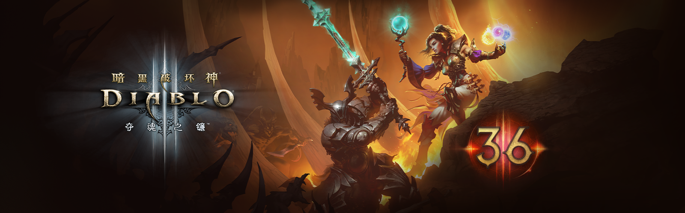

暗黑破坏神III
第36赛季:地狱魔王将于9月12日开放
暗黑破坏神运营团队 | 2025年09月03日

庇护之地在等待你的回应,快来参加第 36 赛季:地狱魔王。从北京时间9月12日下午5点开始,奈非天可以使用在第 25 赛季首次登场亮相的“地狱魔王”主题。要深入了解现已永久开放的庇护之地的祭坛和敌意幻象主题以及更多内容,请查看下方。
赛季旅程
第 36 赛季：地狱魔王
赛季美化道具奖励
赛季旅程奖励
赛季征服
黑德里格的礼物
第 36 赛季：地狱魔王
尽管黑暗灵魂石已被彻底摧毁,但曾被封印其中的地狱魔王的残存碎片依然在庇护之地游荡。这些灵魂碎片蕴含着无比强大的力量——那是曾经属于魔神和魔王的邪恶能量。寻获并掌控这些灵魂碎片的奈非天必须格外小心。力量充满诱惑,纵然心怀善念,也可能误入烈焰地狱的道路……
这一机制首次登场于第 25 赛季,你可以利用灵魂碎片吸收地狱魔王的精华,从而拥抱邪恶力量。踏上赛季旅程,寻找并升级那些源自七大地狱魔王的恶魔灵魂碎片。化身为魔神和魔王,你将以全新的方式对庇护之地的恶魔施以痛苦与折磨。我们等不及想让你立即获取灵魂碎片,释放你内在的真正力量。
奈非天可以寻获七种独特的灵魂碎片（对应七大地狱魔王）,获得崭新的恶魔之力。三种魔神灵魂碎片中的任意一种可镶嵌于头盔,四种魔王灵魂碎片中的任意一种可镶嵌于武器。每个灵魂碎片都可以通过全新的赛季专属材料——地狱熔炉的余烬进行三次升级。
灵魂碎片和地狱熔炉的余烬可在庇护之地各处掉落,但首领掉落灵魂碎片的几率更高。灵魂碎片无法交易,但可以进行分解或用于卡德山的绝望。你同时只能装备一枚魔神灵魂碎片和一枚魔王灵魂碎片。最后需要注意的是,灵魂碎片和地狱熔炉的余烬仅在赛季游戏中掉落,赛季结束后不会转移至非赛季角色。请继续阅读,了解各个灵魂碎片的详细效果。
魔神灵魂碎片
恐惧碎片
- 基础威能：你的冷却时间增加 25%。每有一个技能处于冷却状态,你受到的伤害就会减免 12.5%,造成的伤害提高 12.5%。
- 额外威能：
- 每有一个技能处于冷却状态,你的攻击速度和暴击几率就会提高 5%。
- 消灭 100 个敌人后,你会施放极具破坏力的烈焰之环。
- 如果有 3 个或 3 个以上技能处于冷却状态,你的闪电和火焰技能伤害增加 50%。
憎恨裂片
- 基础威能：当 25 码内有 3 个或 3 个以下的敌人时,你造成的伤害降低 15%。如果在相同距离内有超过 3 个敌人,每有一个敌人,造成的伤害就会提高 5% （最多 50%）。
- 额外威能：
- 消灭一个精英敌人会将 40 码内的所有敌人拉到精英敌人的死亡地点。
- 你的移动速度提高 50% 。25 码内每有一个敌人,你的移动速度就会降低 10%,最多降低 70%。
- 现在你会对每个敌人造成 10% 的额外伤害,而不是 5%（最多 100%）。
毁灭碎块
- 基础威能：你可以在敌人当中不受阻碍地移动。你穿过的每个敌人都会被毁灭印记标记,持续 7 秒。每有一个受到标记的敌人死亡,你的其中一个处于冷却状态的技能将缩短 1 秒的冷却时间。如果毁灭印记在敌人死亡前失效,你将受到相当于最大生命值 2% 的伤害。如果你的生命值低于 35%,则无法施加印记。
- 额外威能：
- 如果敌人在毁灭印记生效时死亡,你有 25% 的几率恢复 5% 的生命值。
- 当你对敌人施加毁灭印记时,你的移动速度提高 5%,持续 7 秒。最多 10 层。
- 现在,你会在身后留下一道火焰轨迹,这道轨迹可立即消灭生命值低于 10% 且带有毁灭印记的敌人。
魔王灵魂碎片
罪恶污点
- 基础威能： 你造成的伤害降低 25%。当你消灭 50 名敌人时召唤一滩血池,使你对精英敌人造成的伤害增加 150%,持续 15 秒。
- 额外威能：
- 现在,血池会使其范围内的精英词缀失效。
- 当你击杀一队精英敌人时,额外获得一个秘境进度宝珠。
- 现在血池会收集秘境进度宝珠。
谎言渣滓
- 基础威能：你造成的伤害降低 25%。你的宠物造成的伤害提高 25%。
- 额外威能：
- 消灭一名精英敌人可以使你所有的活跃冷却时间缩短 5 秒。
- 受到致命伤害时,产生一个会阻止你死亡的阴影,并使你的生命值恢复至 35%,并且在阴影生效时给予所有队伍成员 +225 所有抗性。阴影只会持续 15 秒。
- 你的宠物每攻击一次敌人,你造成的伤害就会提高 0.5%,持续 5 秒。最多叠加 100 次。当达到 100 层时,层数会迅速重置为 0。
苦痛残余
- 基础威能：你的暴击几率降低 15%。对丧失行动能力的敌人发动攻击会自动触发暴击。
- 额外威能：
- 用冰霜伤害攻击敌人有 50% 的几率将其冰冻。冰霜技能对冰冻目标的伤害增加 20%。
- 当你的移动速度加成超过 50% 时,你可以获得无视碰撞的能力。当你穿过敌人时可以将其击退,并使其昏迷 2 秒。
- 当你对敌人打出暴击时,所有玩家的攻击速度提高 5%,持续 5 秒。最多 10 层。
痛楚精魂
- 基础威能：当你对敌人造成毒性伤害时,你的冷却时间缩短效果、移动速度增加 2.5%,受到的伤害增加 5%,持续 10 秒。最多 10 层。
- 额外威能：
- 对敌人造成毒性伤害时,你的移动速度和冷却时间缩短效果最多可以叠加 15 次。
- 当你对敌人造成毒性伤害时,他们在 10 秒内受到的所有毒性伤害提高 50%。
- 消灭一名敌人会对 25 码内的所有敌人造成相当于致死攻击的伤害。
- 头盔 魔神灵魂碎片 恐惧碎片 憎恨碎片 毁灭碎块
- 生命25% 冷却15% 减耗15% 经验50% 金币35%
- 五选一 1150属性/62元素抗/390护甲/20远程伤害减免/20近战伤害减免
- 武器 魔王灵魂碎片 罪恶污点 苦痛残余 谎言渣滓
- 280000-3000击回 20-25%精英伤 38000-40000荆棘伤害 130-150%暴击伤害 270-300点伤害
- 四选一 10-15%伤害 / 12-15%攻速 / 8-10%暴击几率/ 20-25%元素伤害
返回